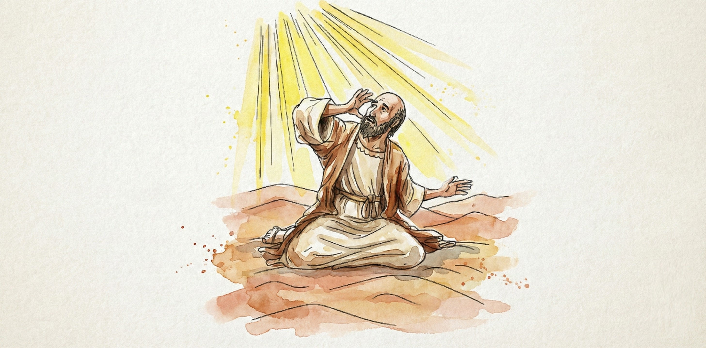
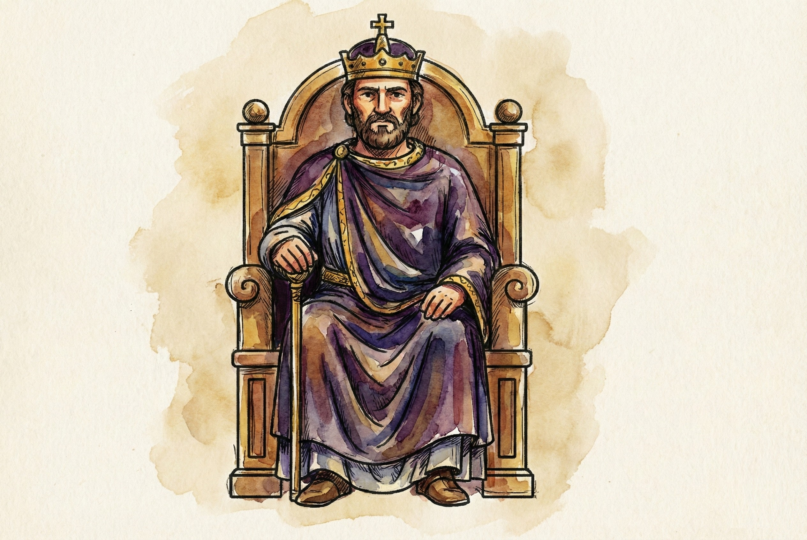
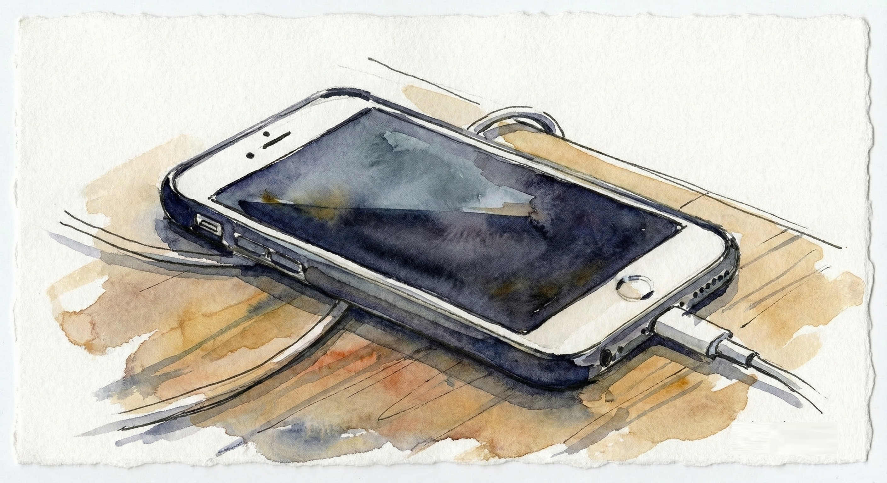
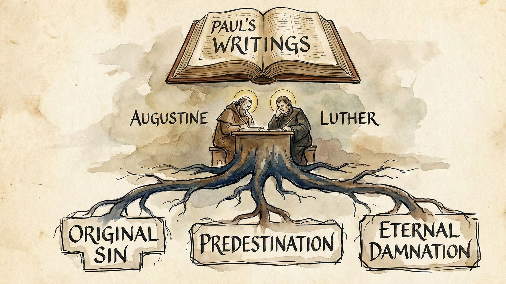

"We must all appear before the judgment seat of Christ." - 2 Corinthians 5:10
When Jesus walked the earth, something electric filled the air.
You could almost hear people exhale after centuries of holding their breath.
For the first time, God didn't sound angry.
He sounded... like love with a pulse.
No temple fees. No sacrifices. No fine print. Just:
That one line detonated two thousand years of religious infrastructure.
And for a while, briefly, gloriously, humanity believed it.
People who'd spent their whole lives trying to buy divine approval suddenly realized it had never been for sale.
Then along came Paul.
Paul is one of those people you'd love to have coffee with and yet dread debating.
He's brilliant, fiery, unstoppable: a human bulldozer with a theology degree.
He was the kid in class who corrected the teacher, quoted the textbook, and still got straight A's.
Before he met Christ, he was Saul: the professional enforcer of a violent religion.
He arrested, accused, and executed in the name of holiness.
Then lightning hit his world: literally. A blinding encounter on the Damascus road flipped him from hunter to herald.
He rose from the dust with a new name and a new mission.
But the old wiring remained. The light-being Paul had encountered was not the real Jesus, just a shrewd imposter whom the real Jesus had warned about. One who blinds instead of heals, who sends demons to teach humility (in the case of Paul.)
When you spend years believing God blesses you for persecuting heretics, that fear-based circuitry doesn't vanish overnight. It just gets baptized.
Jesus
spoke like an artist painting from the heart
Paul
spoke like an attorney building a case file
It's not that Paul was malicious: we'll give him the benefit of the doubt.
He simply defaulted to what he knew: the courtroom of law and guilt. His mind scrambled, no doubt, by the whispers of the light-being he'd met, almost certainly Yahweh.
And little by little, the good news stopped sounding like liberation and started sounding like litigation.
Imagine walking out of prison because Jesus tore up your record-only to have a new warden hand you a contract explaining the terms of your "freedom."
That's what happened to the early church.
Paul was persuasive. Too persuasive.
He had the confidence of a man who believed (probably with all his heart) that he'd met God in high-definition and wasn't afraid to say so.
Letters poured out of him: brilliant, contradictory, passionate, occasionally unhinged, often hard to understand.
People (the few who could read at the time) read his words around dinner tables, copied them onto scrolls, passed them from town to town.
Soon, those letters began to outshine the original eyewitness stories of Jesus.
Why memorize parables when you can quote theology?
Paul's gospel was portable, tweetable: easy to preach, easy to weaponize.
Heaven became a courtroom, sin became debt, salvation became transactional.
And fear? It got a makeover. It wasn't panic anymore; it was "reverence." It wasn't trauma; it was "the fear of the Lord."
Clever branding, really.
Paul talked about grace the way insurance companies talk about coverage: big smiles up front, hidden clauses in the back.
Mixed messages are exhausting.
Under Jesus, people felt like beloved children.
Under Paul, they felt like parolees.... ex-prisoners, out on parole.
Once fear sneaks in, it starts breeding metrics.
How many people did you convert?
How many verses did you memorize?
How often did you repent, fast, tithe, serve?
The early gatherings became performance reviews for heaven.
The church started sounding less like a family and more like a corporation with salvation quotas.
Rome loved that. Bureaucracy thrives on guilt.
You can't govern free people, but you can govern frightened ones.
If citizens believe the Emperor's God holds an eternal furnace for rebels, you won't need many soldiers.
When Christianity was legalized, the Empire didn't choose Jesus' message. It chose Paul's.
Jesus' teachings were too unmanageable: love your enemies, forgive debts, dismantle hierarchy.
Paul's writings, however, came pre-loaded with hierarchy, submission, and punishment.
A perfect fit.
So bishops quoted Paul to demand obedience.
Kings quoted him to bless wars.
Which was different from the example set by Jesus and his followers. John the Baptist called out corrupt power when he saw it, even if it cost him his freedom, and his life. Jesus overturned tables to protest an evil temple-sacrifice system.
Pastors quoted Paul, or the letters written in his name, to shame women, slaves, and doubters.
And everyone forgot that Jesus affirmed women. That he had said, "You are all brothers."
Fear became orthodoxy.
Hell became leverage.
And love, once the fire that set hearts free, was tamed into a slogan.
Living under a God who might damn you for a bad thought is like dating someone who checks your phone every five minutes.
You never relax.
You apologize pre-emptively.
You keep a smile plastered on just in case they're watching.
For centuries, believers lived like that.
They prayed, not to commune, but to mitigate risk.
Worship turned into damage control.
Repentance became a panic button.
I've met people who say, "I love God," but what they really mean is, "I'm terrified of disappointing Him."
That's not devotion. It's trauma dressed as faith.
Ironically, Paul himself admitted the tension:
"The good I want to do, I do not do... but the evil I hate, I keep on doing."
You can hear the exhaustion in his voice.
He built a theology that even he couldn't live under.
That's the tragedy.
He wanted to serve love, but he kept rebuilding law.
He tried to describe grace, but fear kept hijacking his pen.
And the church, ever hungry for order, canonized his confusion.
By the time Augustine and later Luther took Paul's writings as their foundation, the fear had hardened into doctrine.
Original sin. Predestination. Eternal damnation.
All birthed from Paul's vocabulary of guilt and rescue.
Jesus' words ("the kingdom is within you") were quietly replaced by Paul's conditional clauses: "unless," "if," "therefore."
Faith became formula.
Salvation became subscription.
The wildfire of grace cooled into stone.
You can still hear both voices in the modern church.
One preaches the God of Jesus: patient, healing, radiant with mercy.
The other thunders like Paul's old Yahweh: judging, dividing, measuring.
One says, "Love never fails."
The other says, "Fear God and don't forget about the 'blood' which had to be paid to God."
They can't both be the final word.
You have to choose who your teacher is.
Will you follow the voice that says "I desire mercy, not sacrifice"?
Or the one that keeps demanding sacrifices: just rebranded as belief systems, 'remembrance rituals' and tithes?
Here's the miracle: even through Paul's tangled theology, love still leaks out.
You can hear it when he writes, "Nothing can separate us from the love of God."
That wasn't his doctrine talking. That was the Jesus he met for a split second (maybe in the lives of the true apostles) before the religion of his light-being, Yahweh, took back the mic.
That's how strong the Father's true light is.
Even buried under layers of fear, it still glows through the cracks.
Part of me wants to believe that Paul didn't mean to bring fear back, but he did.
His brilliance made it sound holy; his authority made it stick.
Fear re-entered the gospel wearing a halo.
And ever since, humanity has been trying to decide which God to believe in: the one who forgives seventy times seven, or the one who keeps score.
The next chapter will pull back the curtain on the verses that kept Paul's gospel alive: the "hell texts" that still haunt the Church's imagination.
Because once those lose their grip, the whole fear machine collapses.
And what's left is what Jesus always promised:
Love, unafraid.